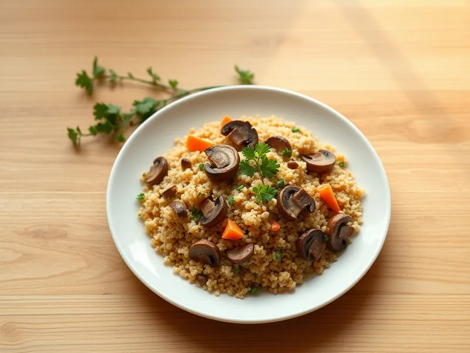

Фото: Иллюстрация ИИ, Cloudflare Workers AI
Булгур с грибами и луком
Рассыпчатый булгур с обжаренными шампиньонами, луком и морковью
30 мин3 порц.415 ккал на порциюБ 14 · Ж 15 · У 48Русская кухня
Продукты на 3 порц.
- Булгур1 стак.
- Шампиньоны300 г
- Лук репчатый1 шт
- Морковь1 шт
- Чеснок2 зуб.
- Растительное масло2,5 ст. л.
- Вода2 стак.
- Соль1,5 ч. л.
- Перец чёрный молотыйпо вкусу
- Петрушка по желаниюпо вкусу
Как готовить
- Нарежьте шампиньоны пластинами, лук мелко, морковь натрите на крупной тёрке, чеснок мелко порубите.
- Разогрейте масло в глубокой сковороде на сильном огне и обжарьте грибы 6-7 минут, пока сок не выпарится и они не подрумянятся.
- Добавьте лук и морковь и жарьте на среднем огне 4 минуты до мягкости, затем чеснок на 30 секунд.
- Всыпьте булгур и перемешивайте 1 минуту, чтобы крупа пропиталась маслом.
- Влейте горячую воду, посолите и поперчите. Доведите до кипения, накройте крышкой и готовьте на слабом огне 15 минут, пока вода не впитается.
- Снимите с огня, дайте постоять под крышкой 5 минут, разрыхлите вилкой и посыпьте петрушкой.
Совет. Грибы солите только после того, как они подрумянятся: соль в начале вытянет сок, и грибы потушатся.